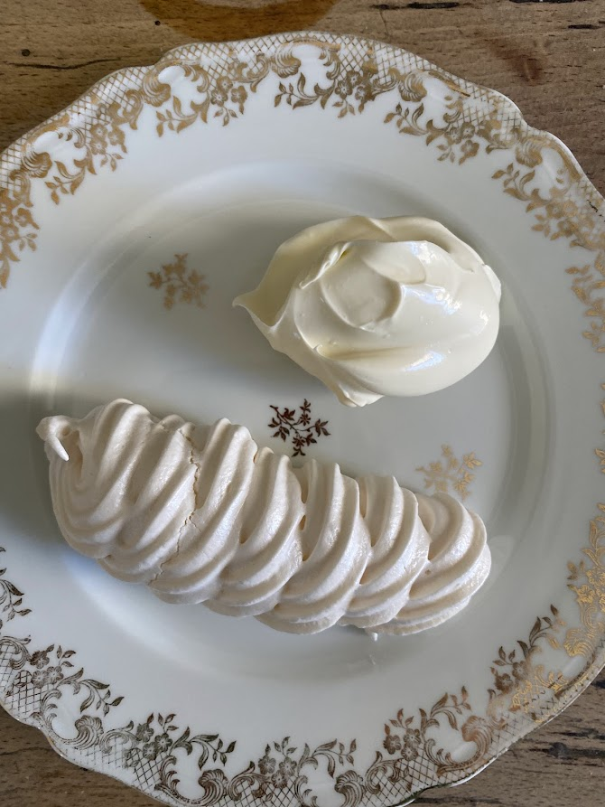

Meringue Suisse
⏱️ 20 min + 1 h de cuisson
🔥 Très facile
👥 Pour 1 fournée



Étapes
- Préparez un bain-marie
Placez un saladier sur une casserole d’eau frémissante (sans contact direct). - Mélangez les blancs et le sucre
Versez les blancs d’œufs et le sucre dans le saladier. - Chauffez la préparation
Fouettez au-dessus du bain-marie jusqu’à atteindre 40–45°C (maximum 50°C). La meringue doit commencer à épaissir. - Montez la meringue
Retirez du bain-marie et fouettez au batteur à vitesse maximale jusqu’à complet refroidissement. La meringue doit être ferme, brillante et former un bec d’oiseau. - Dressez
Pochez les meringues sur une plaque recouverte de papier cuisson. - Cuisson
Cuire à 100°C pendant 1 heure. Éteignez le four et laissez sécher les meringues à l’intérieur.